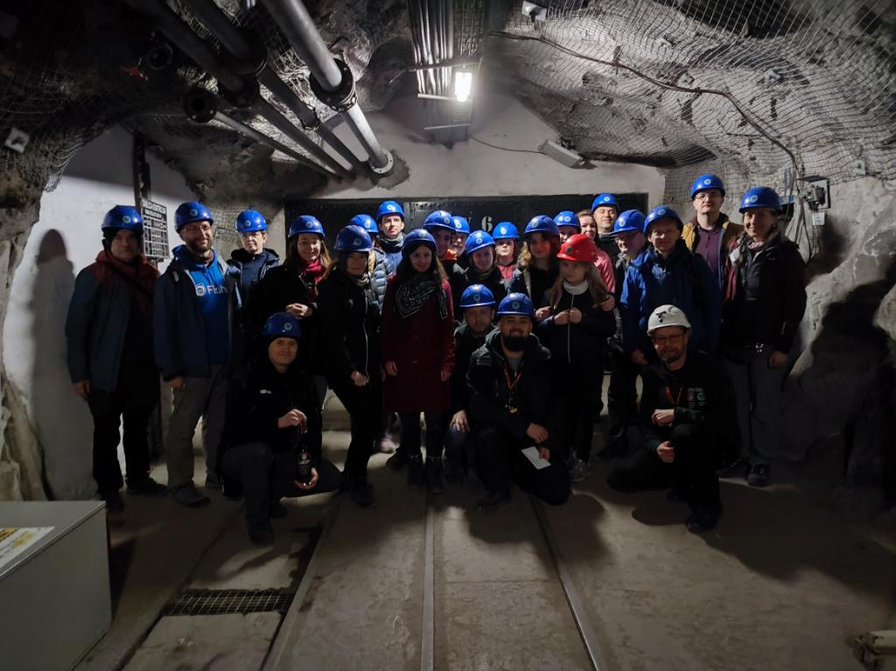
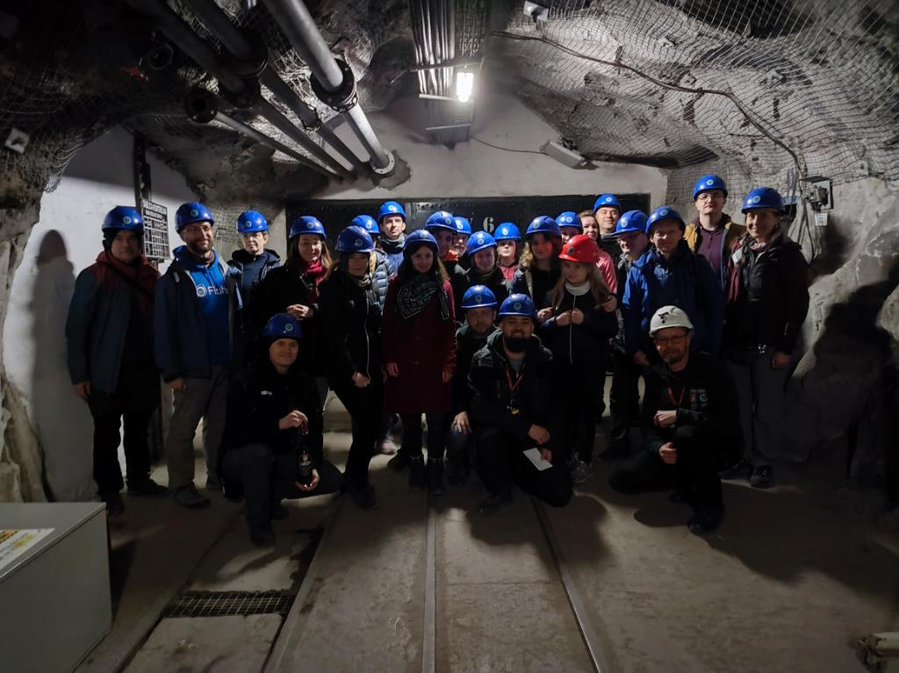

Eventy 2024
Liczba eventów w Krakowie
147
Liczba eventów w Małopolsce
201
Liczba CITO w Małopolsce
12
(eventy)
gorgony

Skończyłem ciągłość :)
(ale nie wiem ile dni, coś koło 1099 dni)
marcin3243

Przyjechałem na wycieczkę do Krakowa!
kranfagel

Wyciągnąłem 19 dni ciągłości FTFów :D
Kosoff

Odwiedziłem siedzibę geocachingu w Seattle :D
Milk_Bandit

Zdobyłem 1000 keszy!
Jouka01

Dla mnie w tym roku najważniejsze było założenie virtuala w Tatrzańskim Parku Narodowym, po ponad miesiącu użerania się z biurokracją i papierologią, gdzie przynajmniej z pięć razy miałam ochotę rzucić to w cholerę, ale ostatecznie jednak się udało :) A z takich przyjemniejszych - to przekroczenie 5000 znalezień
zuzajska

Chyba największym osiągnięciem było zgarnięcie skrzynki, która załapała się na terytorium Rosji :)
LeAPiMi

Najbardziej w pamięci zapisał mi się chyba NAJMNIEJSZY letterbox ever GC9W9P2, którego znalazłam w Barcelonie, autorstwa znakomitego alfonsgf, który lubi też projektować na drukarce 3d tradycyjne skrytki o przeróżnych kształtach.

Luty
w tym roku dłuższy niż zwykle
I ♥ Geocaching
GCAHWFG 14 lutego barucci
I ♥ Geocaching
GCAHWFG 14 lutego barucci


29 lutego
29 lutego
Marzec
Urodzinki, sprzątanka i podsumowanka.
To już 10 lat keszowania
by seba54
To już 10 lat keszowania
10 marca - GCAKN8B


Tu kiedyś zrobimy karaoke - wizja lokalna :)
GCAM74Q 14 marca bezsenna
GCAWYJE ?
Porządki u Florki (CITO w Ogrodzie Botanicznym)
by AnetkaZuzia
Porządki u Florki (CITO w Ogrodzie Botanicznym)
16 marca - GCAM5H3


XLIX GeoPloty - w duchu GeoParty 2024
GCAM7KH 19 marca GeoMalopolska
Już wiosna!
GCAM9VT 21 marca holoskawina
Najdłuższy dzień keszera - podsumowanie
GCAKBM0 22 marca kranfagel
II GeoForum: Debaty i dialogi
GCAMRNP 27 marca barucci
II GeoForum: Debaty i dialogi
GCAMRNP 27 marca barucci


Kwiecień
Slajdowiska, quizy, znakowanie szlaku i kopalnia.
Szukać (jajek) każdy może
GCAMYTQ 1 kwietnia CopernicusHigh
GeoSlajdowisko: Kolumbia
GCAMV4K 4 kwietnia barucci
GeoSlajdowisko: Kolumbia
GCAMV4K 4 kwietnia barucci


GeoGuessr Quiz - Odkryjmy wspólnie świat!
GCANGD7 11 kwietnia barucci
GeoGuessr Quiz - Odkryjmy wspólnie świat!
GCANGD7 11 kwietnia barucci


Święto Tarnowskiej Turystyki
Znakujemy szlak w Kruku
GCAJYTE GCAK26N 20 kwietnia Emson_
Święto Tarnowskiej Turystyki
GCAJYTE GCAK26N 20 kwietnia Emson_


Przed szychtą ü™®‚õèÔ∏èüë∑üë∑‚Äç‚ôÄÔ∏è
GCAN8GZ 21 kwietnia kranfagel
Przed szychtą ü™®‚õèÔ∏èüë∑üë∑‚Äç‚ôÄÔ∏è
GCAN8GZ 21 kwietnia kranfagel

 

Wizytówki i certyfikaty 3
GCANWAN 25 kwietnia Emson_
Tajemnice Ojcowa
GCAK33F 27 kwietnia kranfagel
Tajemnice Ojcowa
GCAK33F 27 kwietnia kranfagel


Raz na 10000
GCANYRX 28 kwietnia pigeox69
Czerwiec
Koza kozę kozą pogania.
Project-GC
Remember that the Geocaching game/sport/hobby is not about quantity, but quality. :)